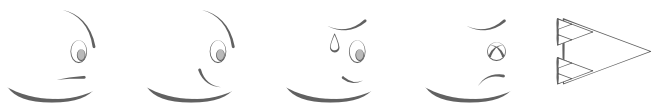

Hook 'Em
March 30th, 2021
You can play Hook 'Em here. It was made for the fifth
Game Dev Underground game jam, which lasted three days, with the theme of
Using Enemies as Weapons.
Hook 'Em is a short game in which your only tool is a hook, which you can use to grab enemies and throw them into walls or smash them into each other.
The Player
I used a character controller that I had previously made for an earlier project with slight changes in order to handle the movement of the player. It handled everything from movement to health, and I used the same controller for both the player and the two enemy types.
The player has a hook which can be thrown, and if it hits an enemy, grabs them and either
returns them for the player to grab, or flings them back behind the player, based on the attack used.
I had planned to add a third attack which swings the enemy in a circle around the player, but that proved to be out of scope for this project.
The chains are made with a SpriteShape that has 3 points, which I dynamically adjust
depending on the hook position. It would be nice to add a curve to the hook in the future.
Enemies
Enemies use the same character controller as the player, with the only difference being the kind of input
they receive. This time, as opposed to Core Defender, I managed to
properly use the Astar Pathfinding Project
for the AI, creating a basic system where the AI could either patrol a certain route, or follow and
attack the player with a certain attack. I am happy to have finally had the chance to learn and use
Astar, and am excited to see the possibilities it allows for in future games.
Enemies can only be killed when they're thrown at other enemies, walls or obstacles, or if they touch an enemy that is hooked by the player.
Checkpoints
The checkpoint system keeps track of all enemies in that checkpoint, and resets them to their original state when a reset is triggered, as well as reset the player to full health and moves him to the checkpoint location.
DOTween
I used DOTween to create the movement patterns for the enemy attacks, as well as a few other things throughout the project, like throwing the hook and reeling it back in, and I thoroughly enjoyed it. It's a simple yet powerful system, and I will be using it frequently in the future.
The Art
Unfortunately, I didn't have an artist, nor the skills and time to create my own art. I drew a hook, used basic shapes for the enemies, made a few different expressions for different states, and left the player as a simple capsule.
Looking Back
I'm very please with how this one turned out! I learned a lot about pathfinding, and I can't wait to have another chance to give it a go.
I'm also very happy with the player controller. It could certainly use some tweaking, but it is very versatile and can be easily expanded upon, especially with the right settings. I will refactor it, separate it into smaller modules, and will be using it as a default character controller for 2D games from now on.
I've been busy with college, as well as trying to learn a few different things that are outside of my
comfort zone. I made a little app which takes screenshots using WPF, and I plan to continue
working on it for a while. I also started to learn dart and Flutter, which
seem to be a very promising and useful tools to have in my arsenal.